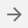

Для получения информации об объекте, требуется кликнуть ЛКМ по объекту, в правой стороне откроется панель с объектами (1), находящимися в точке клика. Далее для проецирование объекта, требуется нажать «Перейти к объекту»(2). Для того чтобы открыть дополнительную информацию об объекте следует кликнуть «Открыть»(3).
Откроется панель с дополнительной информацией об объекте (1). Панель содержит атрибутивную информацию (1) и координатное описание объекта (2).
Кнопка (3) позволяет выбрать проект для отображения указанного объекта на карте.
В случае, когда к объектам прикреплены «Ссылки на документы» (1).
При нажатии ЛКМ по (1) открывается окно с информацией(2)